Sixty years of building sustainable cities.
Since 1966, PUD has helped shape places where people live, work and connect. Every project begins with questioning: how can we make places work better for people while respecting the land, culture and history?
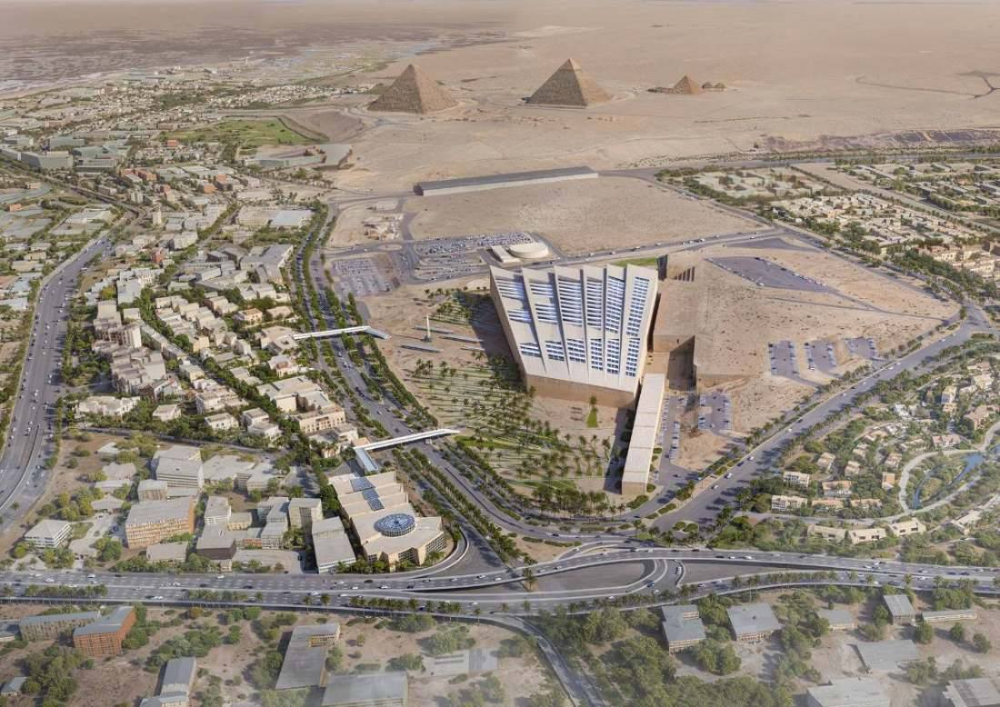

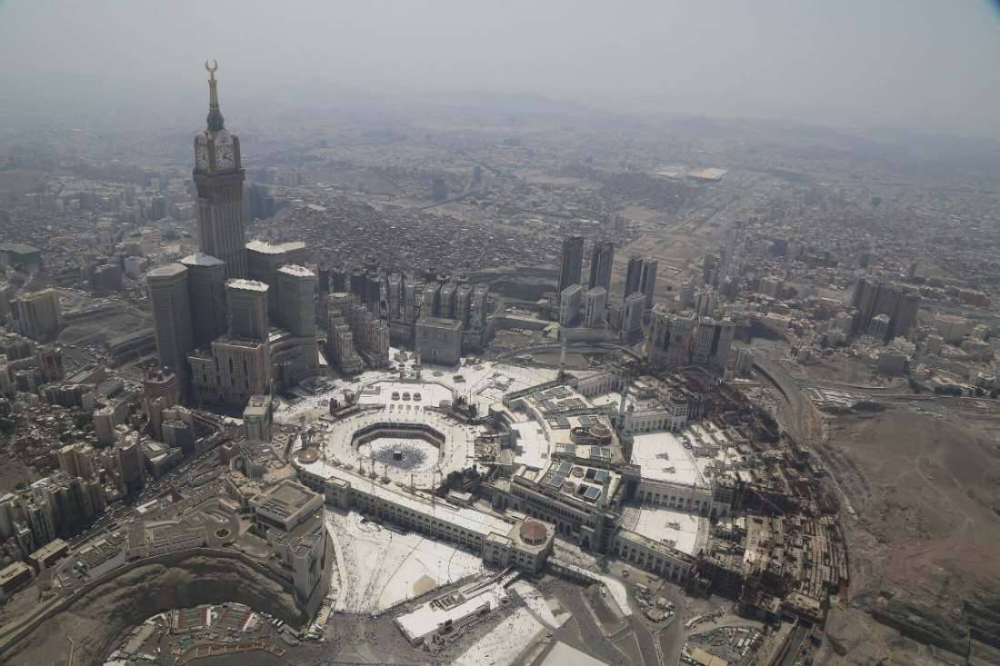


150+ projects · 11 countries · 60+ cities
Every legacy begins with a vision.
That vision did not begin today. Everything we build today has a root. In 1966, Prof. Abdallah Abdel Aziz Attia founded PUD with a strong belief in the synergy between people and their natural and cultural environments.
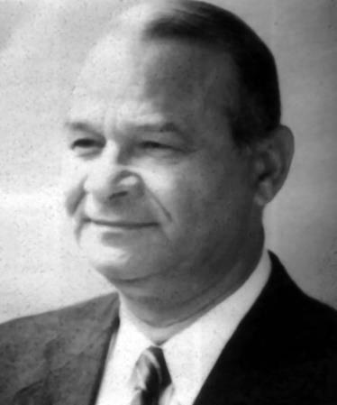
He pioneered an architectural style rooted in local traditions and social responsibility, introducing the “cubed house” model that remains influential today, and reshaped architectural education in the region. His vision took shape in three pioneering projects.
Hilton Dahab Village
Gulf of Aqaba · One of Dahab’s early international beach resorts.
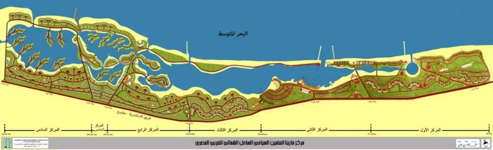
Marina El-Alamein
North Coast · The first large-scale tourism project on Egypt’s North West Coast.
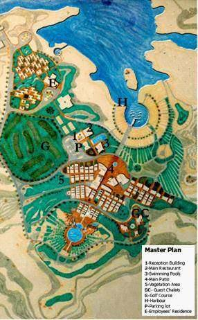
Tut Amoun Village
Lake Nasser, Aswan · Egypt’s first tourist village. Best Tourist Project in Egypt, Rome Biennale 1992.
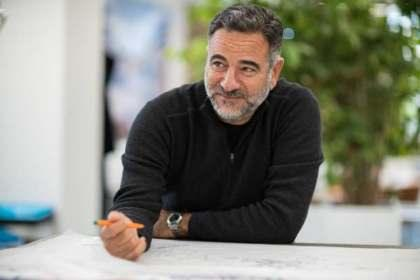
A great leader builds beyond today.
A vision becomes a legacy when it inspires others to carry it forward. That vision continues through Prof. Dr. Amr A. Attia.
Building on the foundations established by his father, he has carried PUD into a new chapter — expanding its reach, strengthening its multidisciplinary expertise and connecting regional knowledge with international collaboration. In 2018 he founded PUD Saudi to expand the firm’s regional impact.
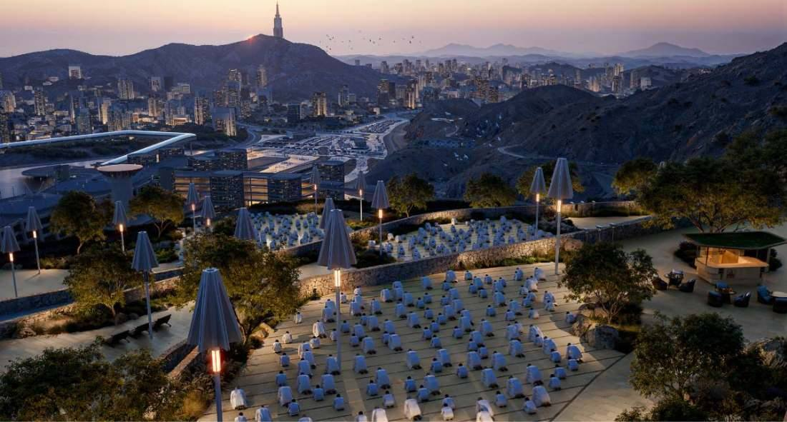
Every place has its own rhythm.
Every challenge, its own context.
Global minds. One mission.
Across six decades, PUD has worked with more than 100 clients and built over 90 collaborations, including 25+ individual experts from the SMEs & CMPs Advisory Group — bringing together governments, public institutions, developers, strategic consultants, planners, architects, engineers, researchers and delivery partners. Each collaboration adds a different perspective to a shared vision.

We don’t just gather experts. We orchestrate brilliance.
From Alex to Aswan.
From Alexandria to the Libyan border along the Mediterranean, from Marsa Alam to the Gulf of Suez and the Gulf of Aqaba, and from Aswan to the Delta along both banks of the Nile Valley.
Then across the Red Sea.
From Jazan to NEOM along the Red Sea and to Al Khafji on the Arabian Gulf, including the holy sites development at Al Mashaaer, welcoming 50,000+ pilgrims daily.
Every place has its own rhythm.
Kuwait, Syria, Iraq, the UAE, Iran, Palestine, Cameroon, Gambia and Germany: the journey keeps expanding.
Alamein Riviera
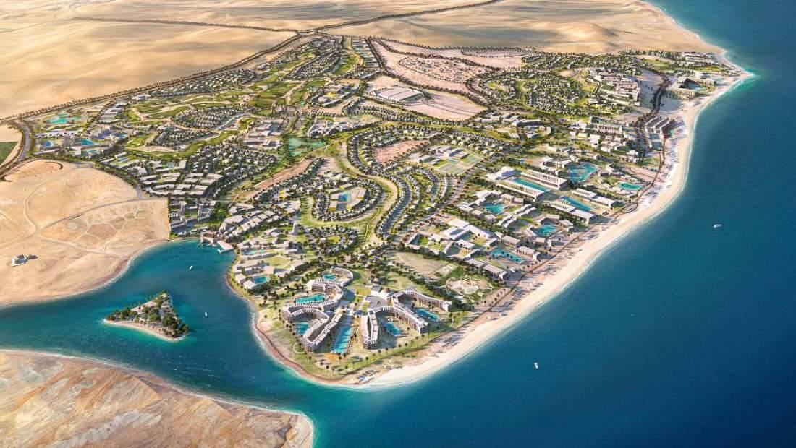
Port Ghalib
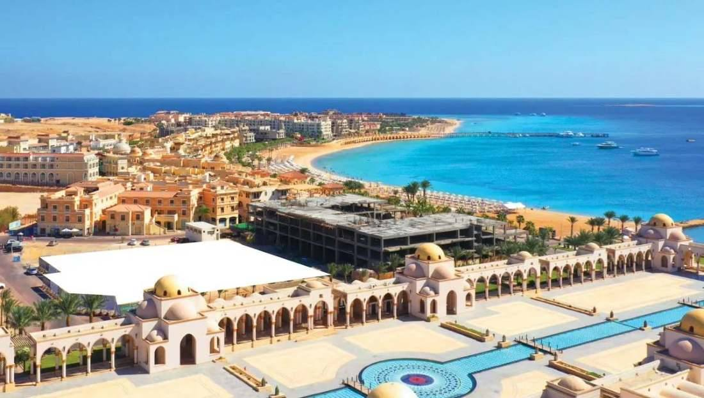
HRH Prince Talal Development
Pyramids Plateau

Sumou Boulevard
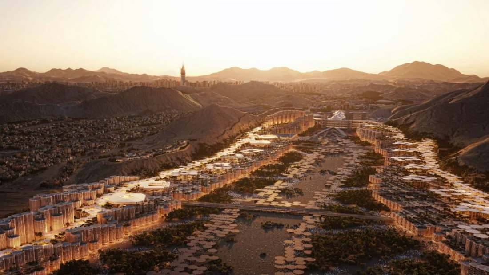
Al Rabita
Khaybar Heritage Area

Sharaan Nature Reserve
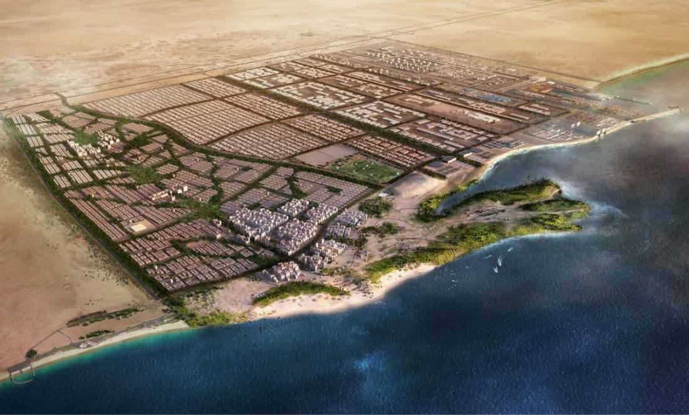
Jazan Economic City
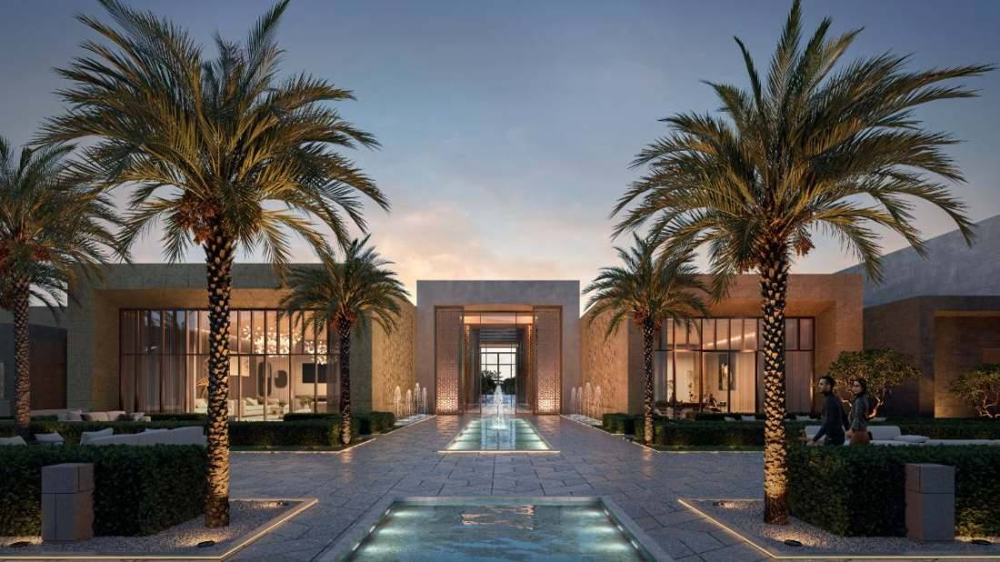
Fawaz Alhokair Estate
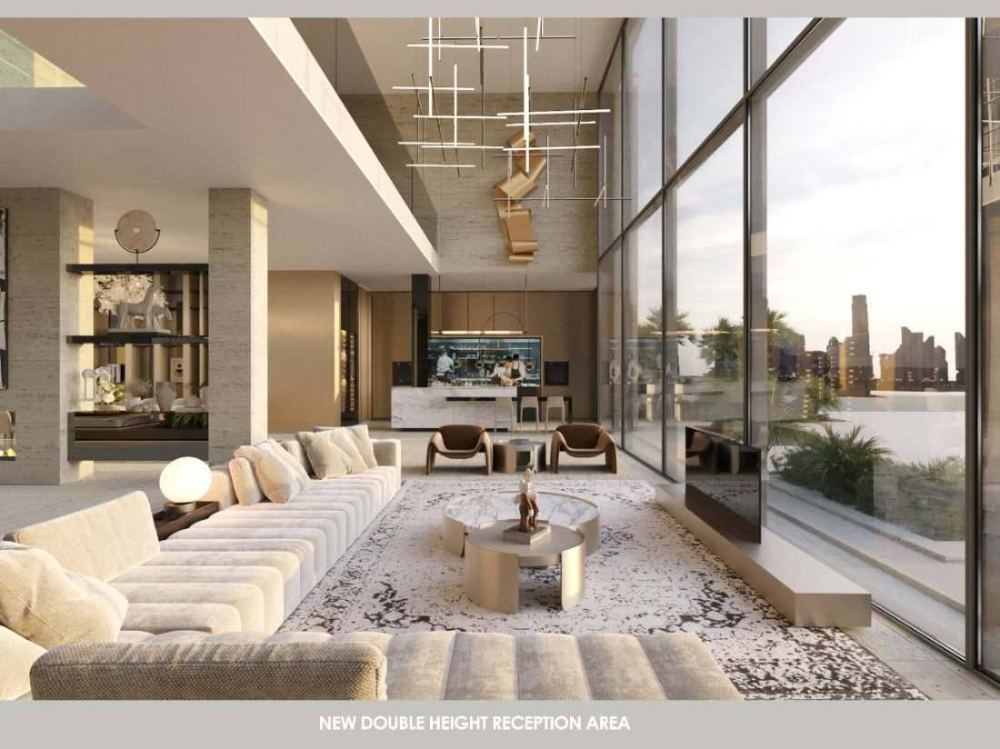
Bvlgari Mansion
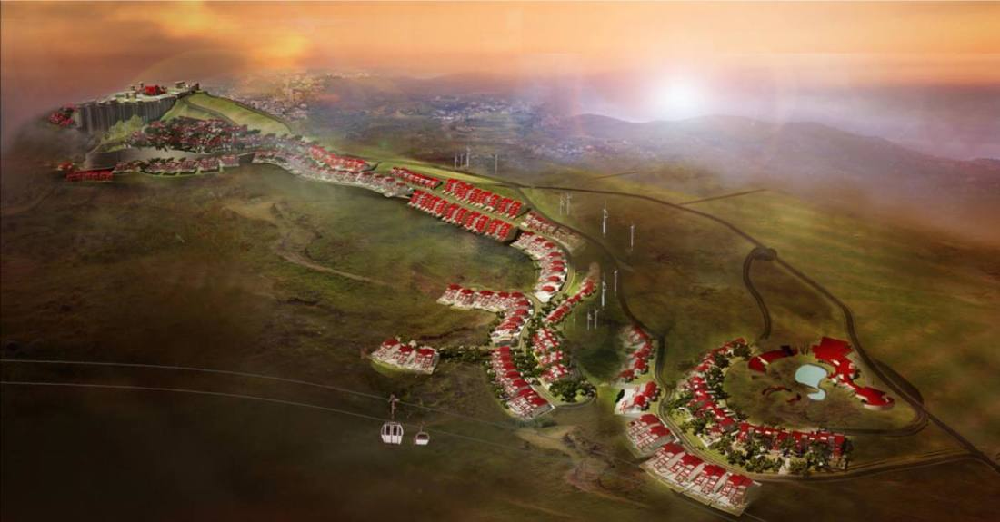
Maria Heights
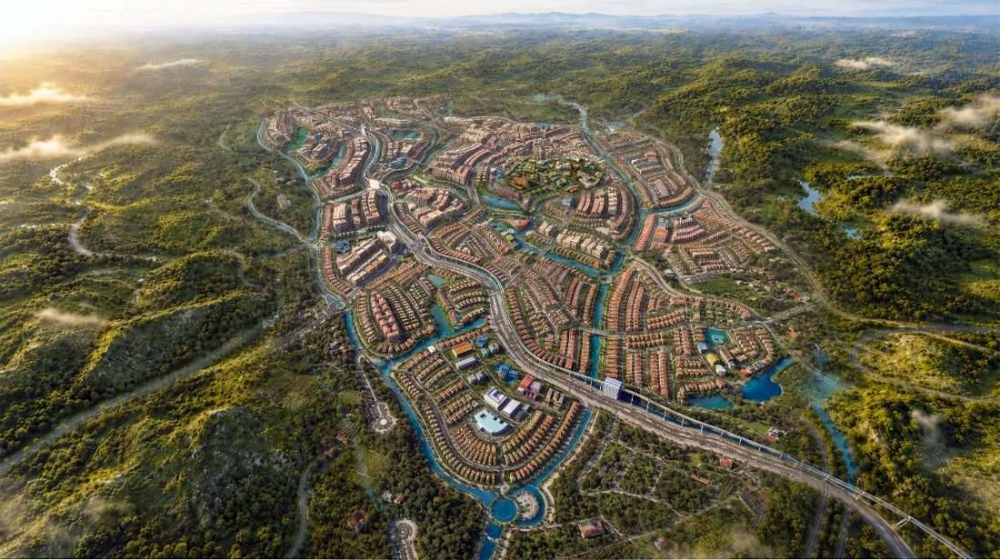
Massoumbou–Diwom
A legacy is not simply inherited. It is developed, tested and carried forward.
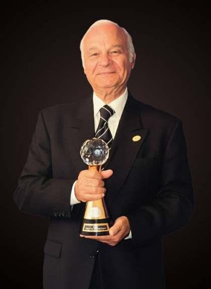
20+ awards, with first- and second-place prizes.
Across this journey, PUD’s record includes the International Star for Leadership in Quality, Paris 2010, featured on the cover of BeattON World Report, May 2010.
All awards